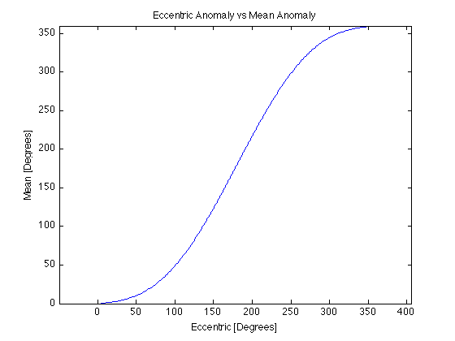
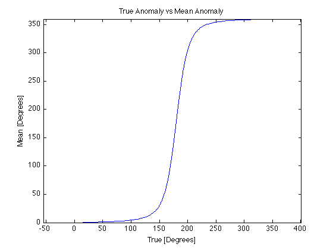
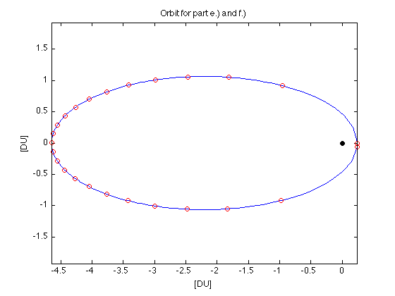
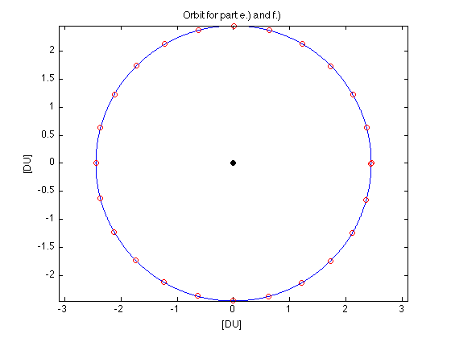

Contents
HW2 Prob 4
clear all; close all; clc
a.)
a = 2.445;
ecc = 0.9;
period = 2*pi*sqrt(a^3)
mean_motion = 2*pi/period
period =
24.0214
mean_motion =
0.2616
b.)
disp('nu = 0 at periapsis')
vp = sqrt((1 + 2*ecc*cosd(0) + ecc^2)/(a*(1-ecc^2)))
disp('nu = 180 at apogee')
va = sqrt((1 + 2*ecc*cosd(180) + ecc^2)/(a*(1-ecc^2)))
nu = 0 at periapsis
vp =
2.7876
nu = 180 at apogee
va =
0.1467
c.)
ecc = 0;
v_circular = sqrt((1 + 2*ecc*cosd(180) + ecc^2)/(a*(1-ecc^2)))
v_circular =
0.6395
d.)
disp('Test case for EccentricAnomaly function works')
EccAnom = EccentricAnomaly(1,0.5,1E-10)
Test case for EccentricAnomaly function works
EccAnom =
1.4987
e.)
clear all; close all;
a = 2.445;
ecc = 0.9;
period = 2*pi*sqrt(a^3);
mean_motion = 2*pi/period;
p = a*(1-ecc^2);
t = [0:0.1:24]';
len = length(t);
MeanAnom = mean_motion*(t-t(1));
EccAnom = EccentricAnomaly(MeanAnom,ecc,1E-10);
num = cos(EccAnom) - ecc;
den = 1 - ecc*cos(EccAnom);
half_plane = floor(MeanAnom/pi);
TrueAnom = half_plane*pi + acos((-1).^mod(half_plane,2) .* num./den);
r = p./(1+ecc*cos(TrueAnom));
x = r.*cos(TrueAnom);
y = r.*sin(TrueAnom);
figure(1)
lim = len;
plot(x(1:lim),y(1:lim))
hold on
scatter(0,0,'black','filled')
axis equal
title('Orbit for part e.) and f.)')
ylabel('[DU]')
xlabel('[DU]')
set(gcf, 'Visible', 'off')
f.) It's easier for me to do the full graph for e.) and f.) a little later
g.) Yes they makes sense. Vp is very fast, so the tick marks are spaced far apart around perigee. Conversely, Va is much slower, so there are a lot tick marks bunched up at apogee.
h.)
figure(2)
plot(EccAnom*180/pi,MeanAnom*180/pi)
title('Eccentric Anomaly vs Mean Anomaly')
xlabel('Eccentric [Degrees]')
ylabel('Mean [Degrees]')
axis equal

i.)
figure(3)
plot(TrueAnom*180/pi,MeanAnom*180/pi)
title('True Anomaly vs Mean Anomaly')
xlabel('True [Degrees]')
ylabel('Mean [Degrees]')
axis equal

f.) This part contains the graph from e.)
t = [0:1:24]';
len = length(t);
MeanAnom = mean_motion*(t-t(1));
EccAnom = EccentricAnomaly(MeanAnom,ecc,1E-10);
num = cos(EccAnom) - ecc;
den = 1 - ecc*cos(EccAnom);
half_plane = floor(MeanAnom/pi);
TrueAnom = half_plane*pi + acos((-1).^mod(half_plane,2) .* num./den);
r = p./(1+ecc*cos(TrueAnom));
x = r.*cos(TrueAnom);
y = r.*sin(TrueAnom);
figure(1)
hold on
scatter(x,y)

j.)
clear all;
a = 2.445;
ecc = 0.0;
period = 2*pi*sqrt(a^3);
mean_motion = 2*pi/period;
p = a*(1-ecc^2);
t = [0:0.01:24]';
len = length(t);
MeanAnom = mean_motion*(t-t(1));
EccAnom = EccentricAnomaly(MeanAnom,ecc,1E-10);
num = cos(EccAnom) - ecc;
den = 1 - ecc*cos(EccAnom);
half_plane = floor(MeanAnom/pi);
TrueAnom = half_plane*pi + acos((-1).^mod(half_plane,2) .* num./den);
r = p./(1+ecc*cos(TrueAnom));
x = r.*cos(TrueAnom);
y = r.*sin(TrueAnom);
figure(4)
lim = len;
plot(x(1:lim),y(1:lim))
hold on
scatter(0,0,'black','filled')
axis equal
title('Orbit for part e.) and f.)')
ylabel('[DU]')
xlabel('[DU]')
set(gcf, 'Visible', 'off')
t = [0:1:24]';
len = length(t);
MeanAnom = mean_motion*(t-t(1));
EccAnom = EccentricAnomaly(MeanAnom,ecc,1E-10);
num = cos(EccAnom) - ecc;
den = 1 - ecc*cos(EccAnom);
half_plane = floor(MeanAnom/pi);
TrueAnom = half_plane*pi + acos((-1).^mod(half_plane,2) .* num./den);
r = p./(1+ecc*cos(TrueAnom));
x = r.*cos(TrueAnom);
y = r.*sin(TrueAnom);
figure(4)
hold on
scatter(x,y)

k.) These tick marks make sense because they're equally spaced, as they should be for v_circular, which is known to be constant.